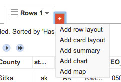
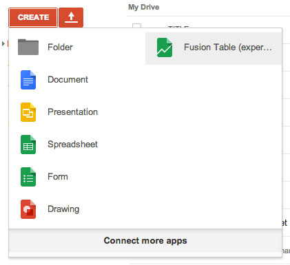
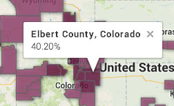
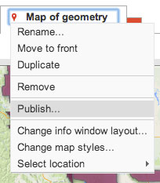

Google Fusion Tables is a common way to turn spreadsheets into maps and charts. Its mapping function is kind of a like a lighter-weight CartoDB, but it's free and open source, and there are a lot of helpful tutorials and existing datasets already in fusion table format for copying.
To make a data-driven map, you usually need two specific types of information: geography and data by geography.
For example, to show election results by county, you need the shape of each U.S. county, and the count of votes for each candidate for that county.
What it is: Geographic information about a place. Either a single geographic point, denoted by a latitude and longitude measure, or a collection of points that form the outline of a shape, like a state or county.
Where you can find it: Many places, but a good place to start for U.S. geography is here. Also, searching google for a specific place you want + "shapefile" or "shp" often gives good results.
How to use it: Most web mapping needs the geographic information in a different format than your shapefile, so you often have to convert it for use with whatever software you're using. For fusion tables, doing a quick google search of "shapefile to fusion table" gives us this handy site, Shape Escape.
I've downloaded and converted a shapefile of U.S. counties and uploaded it to Fusion Tables.
Click to view the shapefile data
Click File > Make a copy to duplicate this data into your own Google Drive.
The default view of a fusion table is the row layout, which is the familiar spreadsheet-style view.
Click the red + icon to see the other viewing options. Select Add map to view your data in a geographic view.
You should now see something like this.
Google has put a point at the center of each of your counties by default. To edit the map style, select the arrow on your Map tab and click Change map styles.
Here is where you can change the display of your map. But since we don't have any data yet, we don't really have much to show. So let's import the other ingredient of map-making: data by geography.
What it is: Data that is organized by location. Unemployment by county, race by census tract and GDP by country are all examples.
Where you can find it: Again, many places and many different formats, as many different sources organize data by geography. For this exercise, we will use the Census Reporter website.
How to use it: You're familiar with opening these file types in Excel. The KEY ELEMENT to your data by geography is that it have some kind of identifier for each geography that matches your shapefile rows. This is often in the form of a GEO ID.
I've grabbed a file from Census Reporter and cleaned it up. This file has education attainment by county.
Navigate to your Google Drive page and create a new fusion table data by uploading the data file you just downloaded from above. Click through the prompts until you have your data file opened in a new fusion table.
I repeat, the rows of your data have to each have an id that matches the id's that exist in your shapefile output.
Luckily, in this case, our shapefile source and data source are the same, and use a matching identifier for each county across the data sets.
Sometimes your shapefile will already have all the data you want. But in this case, we need to merge the geography (county shapes) with the data (education attainment levels).
The two tables: Geography | The table you made from this data download
Starting with either table, navigate to File > Merge.
Select the other table from your file list. If you're in the data file, pick U.S. Counties. If you're in the counties file, pick the data file.
Pick the two GEOID fields that have IDs in the same format.
Next you can choose which columns to use in the new table that will be created from the merge. I often just choose to include all of the fields in case I want to use them later.
Next, view your finished merged table!
Now you can see that your table has data from both the shapefile source and the education data. If it didn't automatically create a map of your new table, click the red + icon and Add map.
Go to "Change map styles" in the Map tab dropdown.
You have several options to choose from. I recommend viewing by Polygons to visualize the map as a choropleth.
Choose color values that go from light to dark in one color family. You'll probably also want to edit the color's opacity so it's around 70% instead of the default 50%.
This is a good site for picking custom colors for maps: Colorbrewer.
The default info window when you click a polygon is a little messy. Use the option just below map styles to edit this, removing the unnecessary fields and showing just the ones that are relevant to the graphic.
I chose to show the name of the county and the percent of college graduates.
When you're ready to publish, it's just like many of the other tools we've used in this class.
Fusion Tables also has charting, powerful summaries (Tools > Summarize) and filtering. There are some explorations of more of Fusion Tables' power on this page.
Use Census shapefiles and Census Reporter data to create a FT map.
The map can be of any geographic area and of any statistic (think about your beat, this could be a nice story for you to report on.) You can use another source besides Census Reporter, but you will likely have more work to do to create matching ID's between the two sets. The best would be to find a shapefile that has the data you want to visualize already included.
This is due in two weeks, on November 25.